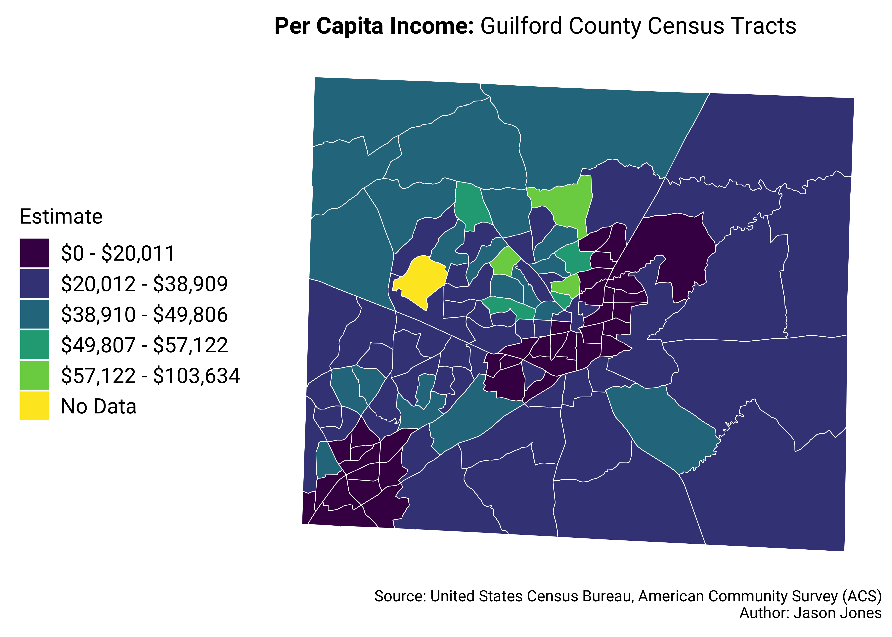
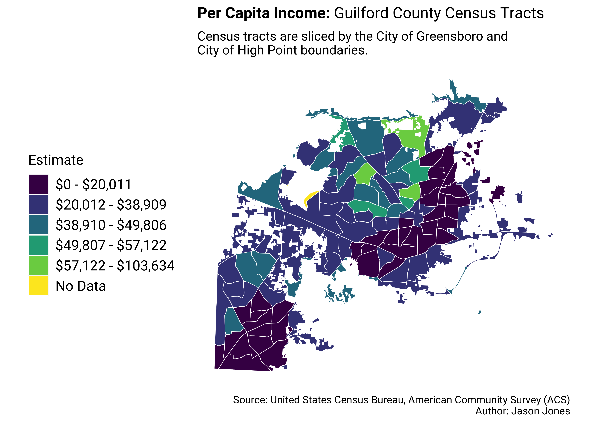
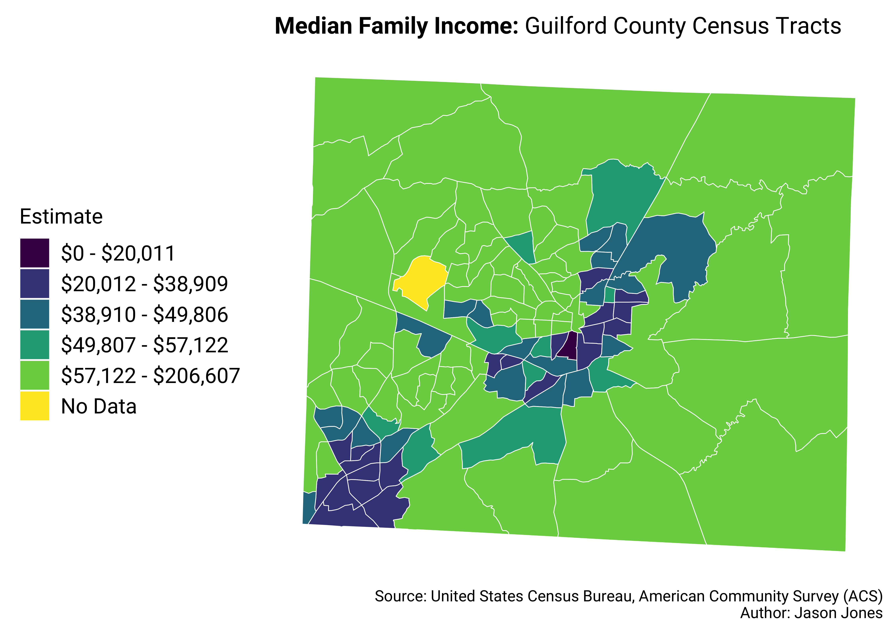
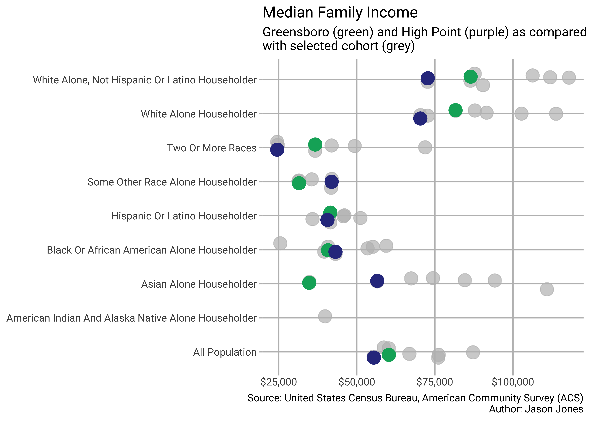
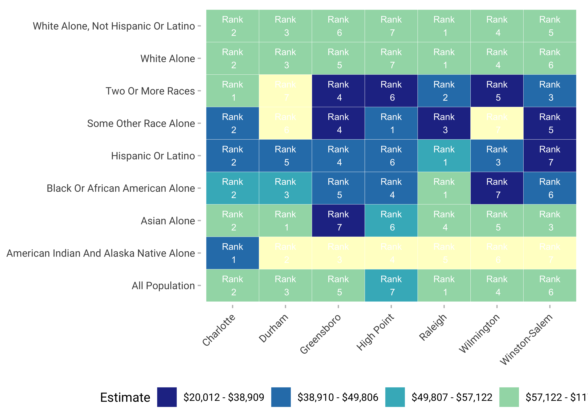
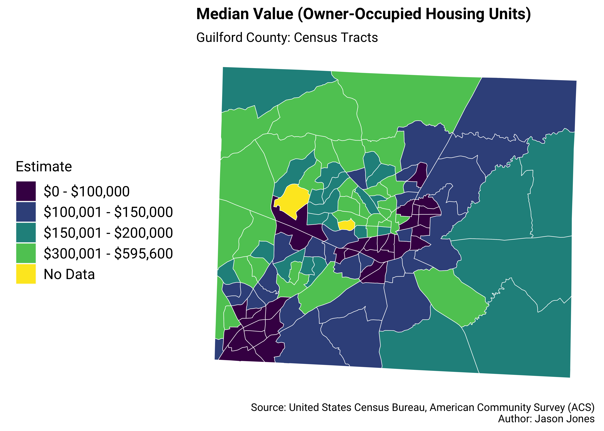
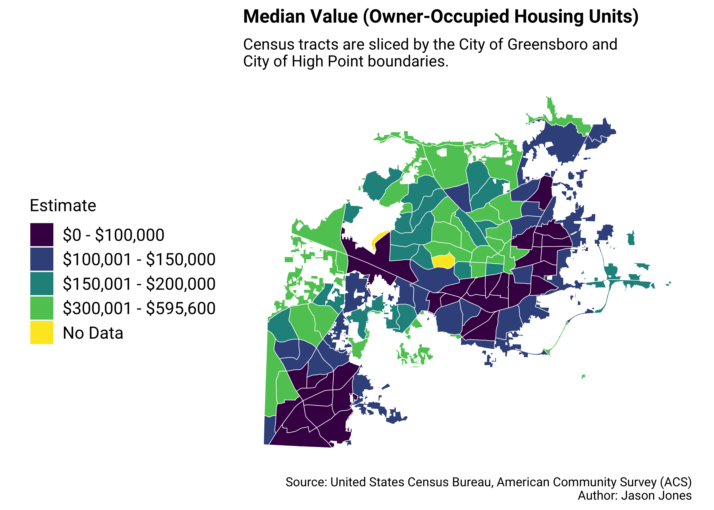
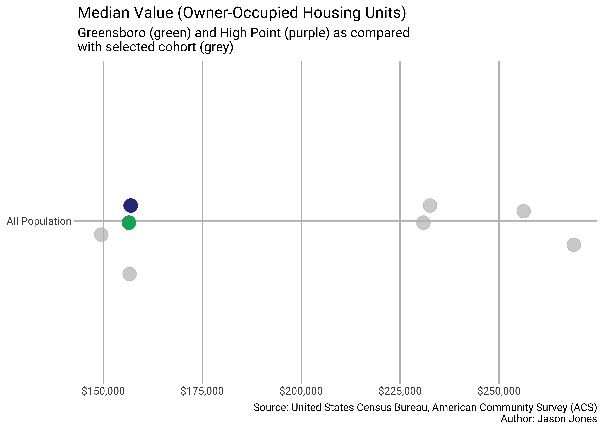
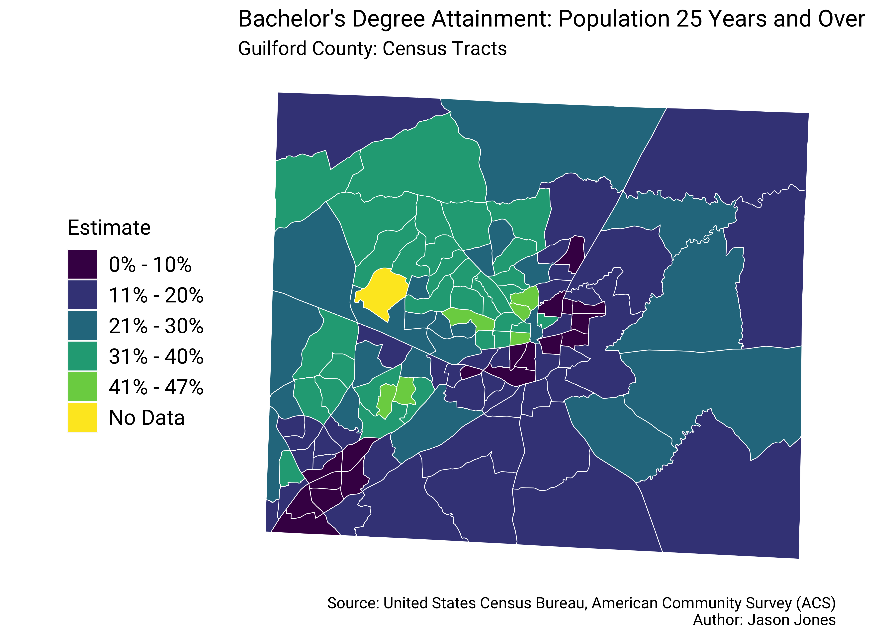

1 Per Capita Income
1.1 Variable Definition
Per capita income is the mean income computed for every man, woman, and child in a particular group including those living in group quarters. It is derived by dividing the aggregate income of a particular group by the total population in that group. The aggregate used to calculate per capita income is rounded. Per capita income is rounded to the nearest whole dollar.
1.2 Thematic Maps

1.3 City Overlays

1.4 Cohort Comparison
1.5 County
1.6 Census Designated Places (CDP)
2 Median Family Income
2.1 Variable Definition
In compiling statistics on family income, the incomes of all members 15 years old and over related to the householder are summed and treated as a single amount. Although the family income statistics cover the past 12 months, the characteristics of individuals and the composition of families refer to the time of interview. Thus, the income of the family does not include amounts received by individuals who were members of the family during all or part of the past 12 months if these individuals no longer resided with the family at the time of interview. Similarly, income amounts reported by individuals who did not reside with the family during the past 12 months but who were members of the family at the time of interview are included. However, the composition of most families was the same during the past 12 months as at the time of interview.
2.2 Thematic Maps

2.3 City Overlays

2.4 Cohort Comparison
2.5 County
2.6 Census Designated Places (CDP)


3 Median Home Value
3.1 Variable Definition
A housing unit is owner-occupied if the owner or co-owner lives in the unit, even if it is mortgaged or not fully paid for. The owner or co-owner must live in the unit and usually is Person 1 on the questionnaire. The unit is “Owned by you or someone in this household with a mortgage or loan” if it is being purchased with a mortgage or some other debt arrangement such as a deed of trust, trust deed, contract to purchase, land contract, or purchase agreement. The housing unit is also considered owned with a mortgage if there is a home equity line of credit on it. The unit also is considered owned with a mortgage if it is built on leased land and there is a mortgage on the unit. Mobile homes occupied by owners with installment loan balances also are included in this category.
A housing unit is “Owned by you or someone in this household free and clear (without a mortgage or loan)” if there is no mortgage or other similar debt on the house, apartment, or mobile home, including units built on leased land if the unit is owned outright without a mortgage.
3.2 Thematic Maps

3.3 City Overlays

3.4 Cohort Comparison
3.5 County
3.6 Census Designated Places (CDP)

4 Educational Attainment
4.1 Variable Definition
Data on educational attainment were derived from answers to Question 11 on the 2018 ACS, which was asked of all respondents. Educational attainment data are tabulated for people 18 years old and over. Respondents are classified according to the highest degree or the highest level of school completed. The question included instructions for persons currently enrolled in school to report the level of the previous grade attended or the highest degree received.
4.2 Thematic Maps

4.3 City Overlays
4.4 Cohort Comparison
4.5 County
4.6 Census Designated Places (CDP)
5 Reference
5.1 Census Bureau Median
The median divides the income distribution into two equal parts: one-half of the cases falling below the median income and one-half above the median. For households and families, the median income is based on the distribution of the total number of households and families including those with no income. The median income for individuals is based on individuals 15 years old and over with income. Median income for households, families, and individuals is computed on the basis of a standard distribution. Median income is rounded to the nearest whole dollar. Median income figures are calculated using linear interpolation.